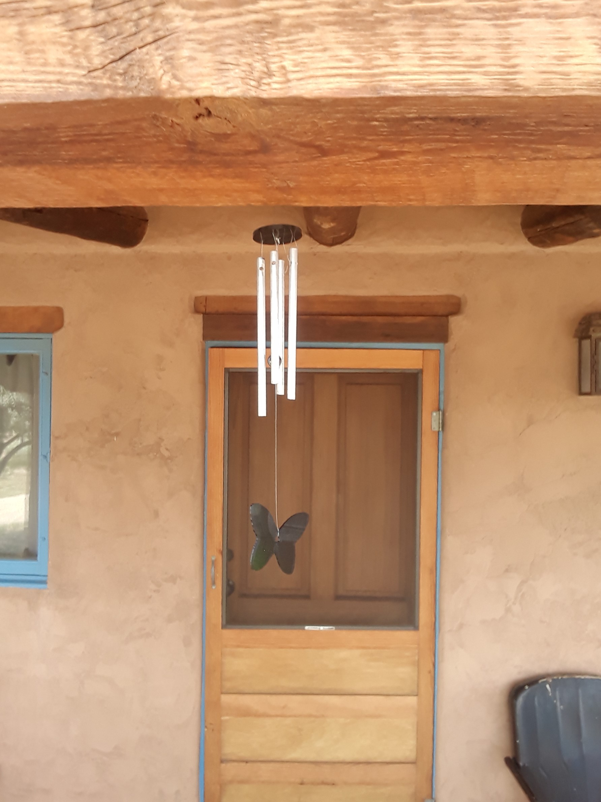

| Home | Solid-bar Wind Chimes | Chime Trees | Tubular Wind Chimes | Chirag Gokani |
|---|
Solid-bar wind chimes are the highest-pitch and lightest-weight chimes I make. They ring freely in gentle breezes and produce an unobtrusive, ambient sound that offers the same harmonic span as larger chimes (with perhaps more timbral richness).
Butterfly-themed solid-bar chimes
My three standard tunings are:

C pentatonic

E lydian

A pentatonic
These chimes are $15 each. I charge $5/individual chime for custom-tuned solid-bar wind chimes.
In this video, you hear the combined sound of four solid-bar C-pentatonic wind chimes on a porch in Arroyo Seco, New Mexico.
Chirag's wind chimes hang outside on my balcony and make me grateful every time there's a breeze--they are lovely to listen to, with a gentle and clear sound, and I have received compliments from numerous neighbors looking for a set. I keep them next to my hammock on the balcony and it is truly a peaceful happy place to sit!
-Anna S., Strongsville, OH
In addition to being aesthetically and musically beautiful, my chimes are really durable! They are built to last and I cannot recommend enough!
-Patricia M., Whitefish Bay, WI
People love the chimes!
-Cindy L., Chili Line Brewing, Lamy, NM